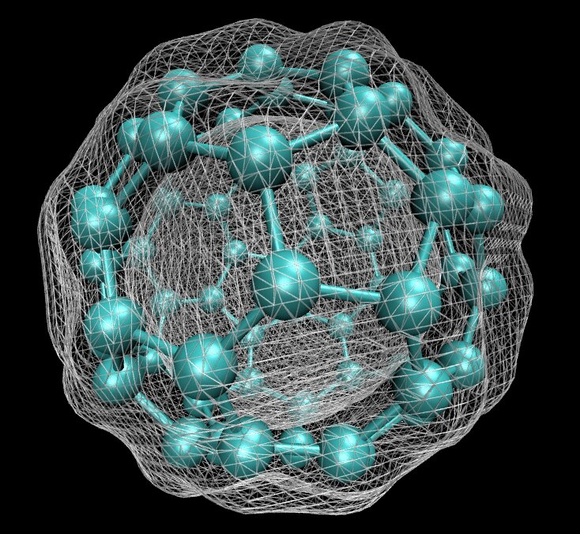
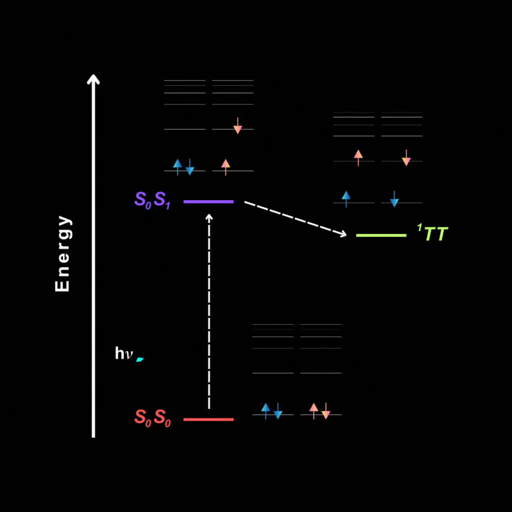

Exploring catalytic reaction mechanisms using DFT calculations. My work focuses on understanding how ligand environments influence catalytic activity and reaction pathways particularly in metal complexes

Investigating photophysical behaviour of molecular systems using computational methods. These studies focus on excited-state properties of different organic molecules.
Applying machine learning approaches to interpret computational data and reveal structure-property relationships in catalytic systems. Data-driven models provide deeper insight into reaction trends and catalyst design.